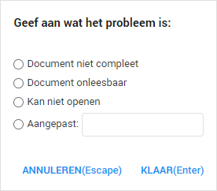

Indien een bestand een technisch probleem heeft, zoals onleesbaarheid of een fout bij het uploaden waardoor het document niet kan worden behandeld, dan geeft u het bestand het label Technisch probleem. Hierdoor kunt u overzichtelijk bijhouden welke bestanden een technisch probleem bevatten en is het voor de Support afdeling van ZyLAB makkelijk te achterhalen welke documenten dit betreffen.
U kunt direct bijhouden wat de reden is voor het technisch probleem. Als het geen van de gegeven opties is dan kunt u zelf een optie toevoegen bij Aangepast.
